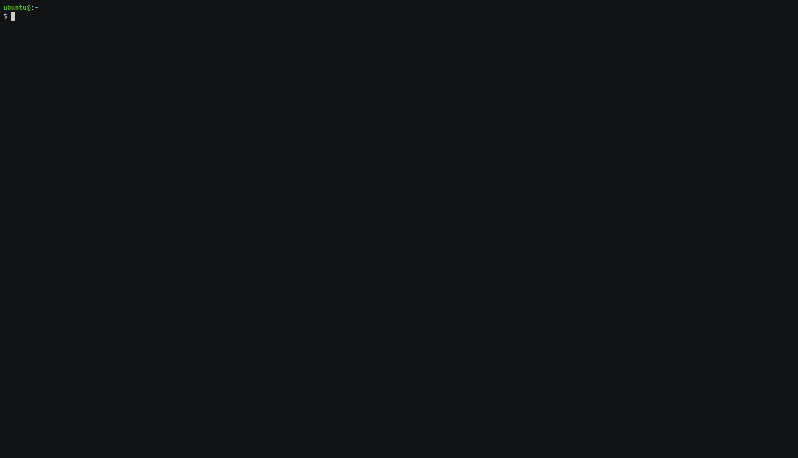

Getting Started
This document provides instructions, including pre-requisites for getting started with the NVIDIA GPU Operator.
Red Hat OpenShift 4
For installing the GPU Operator on clusters with Red Hat OpenShift using RHCOS worker nodes, follow the user guide.
VMware vSphere with Tanzu
For installing the GPU Operator on VMware vSphere with Tanzu leveraging NVIDIA AI Enterprise, follow the NVIDIA AI Enterprise document.
Google Cloud Anthos
For getting started with NVIDIA GPUs for Google Cloud Anthos, follow the getting started document.
Prerequisites
Before installing the GPU Operator, you should ensure that the Kubernetes cluster meets some prerequisites.
All worker nodes in the Kubernetes cluster must run the same operating system version to use the NVIDIA GPU Driver container. Alternatively, if you pre-install the NVIDIA GPU Driver on the nodes, then you can run different operating systems.
Nodes must be configured with a container engine such as Docker CE/EE,
cri-o, orcontainerd. For docker, follow the official install instructions.If your cluster uses Pod Security Admission (PSA) to restrict the behavior of pods, label the namespace for the Operator to set the enforcement policy to privileged:
$ kubectl create ns gpu-operator $ kubectl label --overwrite ns gpu-operator pod-security.kubernetes.io/enforce=privileged
Node Feature Discovery (NFD) is a dependency for the Operator on each node. By default, NFD master and worker are automatically deployed by the Operator. If NFD is already running in the cluster, then you must disable deploying NFD when you install the Operator.
One way to determine if NFD is already running in the cluster is to check for a NFD label on your nodes:
$ kubectl get nodes -o json | jq '.items[].metadata.labels | keys | any(startswith("feature.node.kubernetes.io"))'
If the command output is
true, then NFD is already running in the cluster.For monitoring in Kubernetes 1.13 and 1.14, enable the kubelet
KubeletPodResourcesfeature gate. From Kubernetes 1.15 onwards, its enabled by default.
Note
To enable the KubeletPodResources feature gate, run the following command: echo -e "KUBELET_EXTRA_ARGS=--feature-gates=KubeletPodResources=true" | sudo tee /etc/default/kubelet
Before installing the GPU Operator on NVIDIA vGPU, ensure the following.
The NVIDIA vGPU Host Driver version 12.0 (or later) is pre-installed on all hypervisors hosting NVIDIA vGPU accelerated Kubernetes worker node virtual machines. Please refer to NVIDIA vGPU Documentation for details.
A NVIDIA vGPU License Server is installed and reachable from all Kubernetes worker node virtual machines.
A private registry is available to upload the NVIDIA vGPU specific driver container image.
Each Kubernetes worker node in the cluster has access to the private registry. Private registry access is usually managed through imagePullSecrets. See the Kubernetes Documentation for more information. The user is required to provide these secrets to the NVIDIA GPU-Operator in the driver section of the values.yaml file.
Git and Docker/Podman are required to build the vGPU driver image from source repository and push to local registry.
Note
Uploading the NVIDIA vGPU driver to a publicly available repository or otherwise publicly sharing the driver is a violation of the NVIDIA vGPU EULA.
The rest of this document includes instructions for installing the GPU Operator on supported Linux distributions.
Install NVIDIA GPU Operator
Install Helm
The preferred method to deploy the GPU Operator is using helm.
$ curl -fsSL -o get_helm.sh https://raw.githubusercontent.com/helm/helm/master/scripts/get-helm-3 \
&& chmod 700 get_helm.sh \
&& ./get_helm.sh
Now, add the NVIDIA Helm repository:
$ helm repo add nvidia https://helm.ngc.nvidia.com/nvidia \
&& helm repo update
Install the GPU Operator
The GPU Operator Helm chart offers a number of customizable options that can be configured depending on your environment.
Chart Customization Options
The following options are available when using the Helm chart. These options can be used with --set when installing via Helm.
Parameter |
Description |
Default |
|---|---|---|
|
When set to |
|
|
When set to Pods can specify |
|
|
When set to |
|
|
Map of custom annotations to add to all GPU Operator managed pods. |
|
|
Map of custom labels to add to all GPU Operator managed pods. |
|
|
By default, the Operator deploys NVIDIA drivers as a container on the system.
Set this value to |
|
|
The images are downloaded from NGC. Specify another image repository when using custom driver images. |
|
|
Controls whether the driver daemonset should build and load the |
|
|
Indicate if MOFED is directly pre-installed on the host. This is used to build and load |
|
|
By default, the driver container has an initial delay of |
|
|
When set to |
|
|
Version of the NVIDIA datacenter driver supported by the Operator. If you set |
Depends on the version of the Operator. See the Component Matrix for more information on supported drivers. |
|
The GPU Operator deploys NVIDIA Kata Manager when this field is |
|
|
Controls the strategy to be used with MIG on supported NVIDIA GPUs. Options
are either |
|
|
The MIG manager watches for changes to the MIG geometry and applies reconfiguration as needed. By default, the MIG manager only runs on nodes with GPUs that support MIG (for e.g. A100). |
|
|
Deploys Node Feature Discovery plugin as a daemonset.
Set this variable to |
|
|
Installs node feature rules that are related to confidential computing.
NFD uses the rules to detect security features in CPUs and NVIDIA GPUs.
Set this variable to |
|
|
DEPRECATED as of v1.9 |
|
|
Map of custom labels that will be added to all GPU Operator managed pods. |
|
|
The GPU operator deploys |
|
|
By default, the Operator deploys the NVIDIA Container Toolkit ( |
|
Namespace
Prior to GPU Operator v1.9, the operator was installed in the default namespace while all operands were
installed in the gpu-operator-resources namespace.
Starting with GPU Operator v1.9, both the operator and operands get installed in the same namespace.
The namespace is configurable and is determined during installation. For example, to install the GPU Operator
in the gpu-operator namespace:
$ helm install --wait --generate-name \
-n gpu-operator --create-namespace \
nvidia/gpu-operator
If a namespace is not specified during installation, all GPU Operator components will be installed in the
default namespace.
Operands
By default, the GPU Operator operands are deployed on all GPU worker nodes in the cluster.
GPU worker nodes are identified by the presence of the label feature.node.kubernetes.io/pci-10de.present=true,
where 0x10de is the PCI vendor ID assigned to NVIDIA.
To disable operands from getting deployed on a GPU worker node, label the node with nvidia.com/gpu.deploy.operands=false.
$ kubectl label nodes $NODE nvidia.com/gpu.deploy.operands=false
Common Deployment Scenarios
In this section, we present some common deployment recipes when using the Helm chart to install the GPU Operator.
Bare-metal/Passthrough with default configurations on Ubuntu
In this scenario, the default configuration options are used:
$ helm install --wait --generate-name \
-n gpu-operator --create-namespace \
nvidia/gpu-operator
For installing on Secure Boot systems or using Precompiled modules refer to Precompiled Driver Containers.
Bare-metal/Passthrough with default configurations on Red Hat Enterprise Linux
In this scenario, use the NVIDIA Container Toolkit image that is built on UBI 8:
$ helm install --wait --generate-name \
-n gpu-operator --create-namespace \
nvidia/gpu-operator \
--set toolkit-version=1.13.4-ubi8
Replace the 1.13.4 value in the preceding command with the version that is supported
with the NVIDIA GPU Operator.
Refer to the GPU Operator Component Matrix on the platform support page.
When using RHEL8 with Kubernetes, SELinux must be enabled either in permissive or enforcing mode for use with the GPU Operator. Additionally, network restricted environments are not supported.
Bare-metal/Passthrough with default configurations on CentOS
In this scenario, use the NVIDIA Container Toolkit image that is build on CentOS:
$ helm install --wait --generate-name \
-n gpu-operator --create-namespace \
nvidia/gpu-operator \
--set toolkit.version=1.13.4-centos7
For CentOS 8 systems, use the UBI 8 image: toolkit.version=1.13.4-ubi8.
Replace the 1.13.4 value in the preceding command with the version that is supported with the NVIDIA GPU Operator.
Refer to the GPU Operator Component Matrix on the platform support page.
You can also refer to the tags
for the NVIDIA Container Toolkit image from the NVIDIA NGC Catalog.
NVIDIA vGPU
Note
The GPU Operator with NVIDIA vGPUs requires additional steps to build a private driver image prior to install. Refer to the document NVIDIA vGPU for detailed instructions on the workflow and required values of the variables used in this command.
The command below will install the GPU Operator with its default configuration for vGPU:
$ helm install --wait --generate-name \
-n gpu-operator --create-namespace \
nvidia/gpu-operator \
--set driver.repository=$PRIVATE_REGISTRY \
--set driver.version=$VERSION \
--set driver.imagePullSecrets={$REGISTRY_SECRET_NAME} \
--set driver.licensingConfig.configMapName=licensing-config
NVIDIA AI Enterprise
Refer to GPU Operator with NVIDIA AI Enterprise.
Bare-metal/Passthrough with pre-installed NVIDIA drivers
In this example, the user has already pre-installed NVIDIA drivers as part of the system image:
$ helm install --wait --generate-name \
-n gpu-operator --create-namespace \
nvidia/gpu-operator \
--set driver.enabled=false
Bare-metal/Passthrough with pre-installed drivers and NVIDIA Container Toolkit
In this example, the user has already pre-installed the NVIDIA drivers and NVIDIA Container Toolkit (nvidia-docker2)
as part of the system image.
Note
These steps should be followed when using the GPU Operator v1.9+ on DGX A100 systems with DGX OS 5.1+.
Before installing the operator, ensure that the following configurations are modified depending on the container runtime configured in your cluster.
Docker:
Update the Docker configuration to add
nvidiaas the default runtime. Thenvidiaruntime should be setup as the default container runtime for Docker on GPU nodes. This can be done by adding thedefault-runtimeline into the Docker daemon config file, which is usually located on the system at/etc/docker/daemon.json:{ "default-runtime": "nvidia", "runtimes": { "nvidia": { "path": "/usr/bin/nvidia-container-runtime", "runtimeArgs": [] } } }Restart the Docker daemon to complete the installation after setting the default runtime:
$ sudo systemctl restart docker
Containerd:
Update
containerdto usenvidiaas the default runtime and addnvidiaruntime configuration. This can be done by adding below config to/etc/containerd/config.tomland restartingcontainerdservice.version = 2 [plugins] [plugins."io.containerd.grpc.v1.cri"] [plugins."io.containerd.grpc.v1.cri".containerd] default_runtime_name = "nvidia" [plugins."io.containerd.grpc.v1.cri".containerd.runtimes] [plugins."io.containerd.grpc.v1.cri".containerd.runtimes.nvidia] privileged_without_host_devices = false runtime_engine = "" runtime_root = "" runtime_type = "io.containerd.runc.v2" [plugins."io.containerd.grpc.v1.cri".containerd.runtimes.nvidia.options] BinaryName = "/usr/bin/nvidia-container-runtime"Restart the Containerd daemon to complete the installation after setting the default runtime:
$ sudo systemctl restart containerd
Install the GPU operator with the following options:
$ helm install --wait --generate-name \
-n gpu-operator --create-namespace \
nvidia/gpu-operator \
--set driver.enabled=false \
--set toolkit.enabled=false
Bare-metal/Passthrough with pre-installed NVIDIA Container Toolkit (but no drivers)
In this example, the user has already pre-installed the NVIDIA Container Toolkit (nvidia-docker2) as part of the system image.
Before installing the operator, ensure that the following configurations are modified depending on the container runtime configured in your cluster.
Docker:
Update the Docker configuration to add
nvidiaas the default runtime. Thenvidiaruntime should be setup as the default container runtime for Docker on GPU nodes. This can be done by adding thedefault-runtimeline into the Docker daemon config file, which is usually located on the system at/etc/docker/daemon.json:{ "default-runtime": "nvidia", "runtimes": { "nvidia": { "path": "/usr/bin/nvidia-container-runtime", "runtimeArgs": [] } } }Restart the Docker daemon to complete the installation after setting the default runtime:
$ sudo systemctl restart docker
Containerd:
Update
containerdto usenvidiaas the default runtime and addnvidiaruntime configuration. This can be done by adding below config to/etc/containerd/config.tomland restartingcontainerdservice.version = 2 [plugins] [plugins."io.containerd.grpc.v1.cri"] [plugins."io.containerd.grpc.v1.cri".containerd] default_runtime_name = "nvidia" [plugins."io.containerd.grpc.v1.cri".containerd.runtimes] [plugins."io.containerd.grpc.v1.cri".containerd.runtimes.nvidia] privileged_without_host_devices = false runtime_engine = "" runtime_root = "" runtime_type = "io.containerd.runc.v2" [plugins."io.containerd.grpc.v1.cri".containerd.runtimes.nvidia.options] BinaryName = "/usr/bin/nvidia-container-runtime"Restart the Containerd daemon to complete the installation after setting the default runtime:
$ sudo systemctl restart containerd
Configure toolkit to use the root directory of the driver installation as /run/nvidia/driver, which is the path mounted by driver container.
$ sudo sed -i 's/^#root/root/' /etc/nvidia-container-runtime/config.toml
Once these steps are complete, now install the GPU operator with the following options (which will provision a driver):
$ helm install --wait --generate-name \
-n gpu-operator --create-namespace \
nvidia/gpu-operator \
--set toolkit.enabled=false
Custom driver image (based off a specific driver version)
If you want to use custom driver container images (for e.g. using 465.27), then you would need to build a new driver container image. Follow these steps:
Rebuild the driver container by specifying the
$DRIVER_VERSIONargument when building the Docker image. For reference, the driver container Dockerfiles are available on the Git repo hereBuild the container using the appropriate Dockerfile. For example:
$ docker build --pull -t \ --build-arg DRIVER_VERSION=455.28 \ nvidia/driver:455.28-ubuntu20.04 \ --file Dockerfile .
Ensure that the driver container is tagged as shown in the example by using the
driver:<version>-<os>schema.Specify the new driver image and repository by overriding the defaults in the Helm install command. For example:
$ helm install --wait --generate-name \ -n gpu-operator --create-namespace \ nvidia/gpu-operator \ --set driver.repository=docker.io/nvidia \ --set driver.version="465.27"
Note that these instructions are provided for reference and evaluation purposes. Not using the standard releases of the GPU Operator from NVIDIA would mean limited support for such custom configurations.
Custom configuration for runtime containerd
When you use containerd as the container runtime, the following configuration options are used with the container-toolkit deployed with GPU Operator:
toolkit:
env:
- name: CONTAINERD_CONFIG
value: /etc/containerd/config.toml
- name: CONTAINERD_SOCKET
value: /run/containerd/containerd.sock
- name: CONTAINERD_RUNTIME_CLASS
value: nvidia
- name: CONTAINERD_SET_AS_DEFAULT
value: true
These options are defined as follows:
- CONTAINERD_CONFIGThe path on the host to the
containerdconfigyou would like to have updated with support for the
nvidia-container-runtime. By default this will point to/etc/containerd/config.toml(the default location forcontainerd). It should be customized if yourcontainerdinstallation is not in the default location.
- CONTAINERD_SOCKETThe path on the host to the socket file used to
communicate with
containerd. The operator will use this to send aSIGHUPsignal to thecontainerddaemon to reload its config. By default this will point to/run/containerd/containerd.sock(the default location forcontainerd). It should be customized if yourcontainerdinstallation is not in the default location.
- CONTAINERD_RUNTIME_CLASSThe name of the
Runtime Class you would like to associate with the
nvidia-container-runtime. Pods launched with aruntimeClassNameequal to CONTAINERD_RUNTIME_CLASS will always run with thenvidia-container-runtime. The default CONTAINERD_RUNTIME_CLASS isnvidia.
- CONTAINERD_SET_AS_DEFAULTA flag indicating whether you want to set
nvidia-container-runtimeas the default runtime used to launch all containers. When set to false, only containers in pods with aruntimeClassNameequal to CONTAINERD_RUNTIME_CLASS will be run with thenvidia-container-runtime. The default value istrue.
Rancher Kubernetes Engine 2
For Rancher Kubernetes Engine 2 (RKE2), set the following in the ClusterPolicy.
toolkit:
env:
- name: CONTAINERD_CONFIG
value: /var/lib/rancher/rke2/agent/etc/containerd/config.toml.tmpl
- name: CONTAINERD_SOCKET
value: /run/k3s/containerd/containerd.sock
- name: CONTAINERD_RUNTIME_CLASS
value: nvidia
- name: CONTAINERD_SET_AS_DEFAULT
value: "true"
These options can be passed to GPU Operator during install time as below.
helm install gpu-operator -n gpu-operator --create-namespace \
nvidia/gpu-operator $HELM_OPTIONS \
--set toolkit.env[0].name=CONTAINERD_CONFIG \
--set toolkit.env[0].value=/var/lib/rancher/rke2/agent/etc/containerd/config.toml.tmpl \
--set toolkit.env[1].name=CONTAINERD_SOCKET \
--set toolkit.env[1].value=/run/k3s/containerd/containerd.sock \
--set toolkit.env[2].name=CONTAINERD_RUNTIME_CLASS \
--set toolkit.env[2].value=nvidia \
--set toolkit.env[3].name=CONTAINERD_SET_AS_DEFAULT \
--set-string toolkit.env[3].value=true
MicroK8s
For MicroK8s, set the following in the ClusterPolicy.
toolkit:
env:
- name: CONTAINERD_CONFIG
value: /var/snap/microk8s/current/args/containerd-template.toml
- name: CONTAINERD_SOCKET
value: /var/snap/microk8s/common/run/containerd.sock
- name: CONTAINERD_RUNTIME_CLASS
value: nvidia
- name: CONTAINERD_SET_AS_DEFAULT
value: "true"
These options can be passed to GPU Operator during install time as below.
helm install gpu-operator -n gpu-operator --create-namespace \
nvidia/gpu-operator $HELM_OPTIONS \
--set toolkit.env[0].name=CONTAINERD_CONFIG \
--set toolkit.env[0].value=/var/snap/microk8s/current/args/containerd-template.toml \
--set toolkit.env[1].name=CONTAINERD_SOCKET \
--set toolkit.env[1].value=/var/snap/microk8s/common/run/containerd.sock \
--set toolkit.env[2].name=CONTAINERD_RUNTIME_CLASS \
--set toolkit.env[2].value=nvidia \
--set toolkit.env[3].name=CONTAINERD_SET_AS_DEFAULT \
--set-string toolkit.env[3].value=true
Proxy Environments
Refer to the section Install GPU Operator in Proxy Environments for more information on how to install the Operator on clusters behind a HTTP proxy.
Air-gapped Environments
Refer to the section Install NVIDIA GPU Operator in Air-Gapped Environments for more information on how to install the Operator in air-gapped environments.
Multi-Instance GPU (MIG)
Refer to the document GPU Operator with MIG for more information on how use the Operator with Multi-Instance GPU (MIG) on NVIDIA Ampere products. For information about configuring MIG support for the NVIDIA GPU Operator in an OpenShift Container Platform cluster, refer to MIG Support in OpenShift Container Platform for more information.
KubeVirt / OpenShift Virtualization
Refer to the document GPU Operator with KubeVirt for more information on how to use the GPU Operator to provision GPU nodes for running KubeVirt virtual machines with access to GPU. For guidance on using the GPU Operator with OpenShift Virtualization, refer to the document NVIDIA GPU Operator with OpenShift Virtualization.
Outdated Kernels
Refer to the section Considerations when Installing with Outdated Kernels in Cluster for more information on how to install the Operator successfully when nodes in the cluster are not running the latest kernel
Verify GPU Operator Install
Once the Helm chart is installed, check the status of the pods to ensure all the containers are running and the validation is complete:
$ kubectl get pods -n gpu-operator
NAME READY STATUS RESTARTS AGE
gpu-feature-discovery-crrsq 1/1 Running 0 60s
gpu-operator-7fb75556c7-x8spj 1/1 Running 0 5m13s
gpu-operator-node-feature-discovery-master-58d884d5cc-w7q7b 1/1 Running 0 5m13s
gpu-operator-node-feature-discovery-worker-6rht2 1/1 Running 0 5m13s
gpu-operator-node-feature-discovery-worker-9r8js 1/1 Running 0 5m13s
nvidia-container-toolkit-daemonset-lhgqf 1/1 Running 0 4m53s
nvidia-cuda-validator-rhvbb 0/1 Completed 0 54s
nvidia-dcgm-5jqzg 1/1 Running 0 60s
nvidia-dcgm-exporter-h964h 1/1 Running 0 60s
nvidia-device-plugin-daemonset-d9ntc 1/1 Running 0 60s
nvidia-device-plugin-validator-cm2fd 0/1 Completed 0 48s
nvidia-driver-daemonset-5xj6g 1/1 Running 0 4m53s
nvidia-mig-manager-89z9b 1/1 Running 0 4m53s
nvidia-operator-validator-bwx99 1/1 Running 0 58s
We can now proceed to running some sample GPU workloads to verify that the Operator (and its components) are working correctly.
Running Sample GPU Applications
CUDA VectorAdd
In the first example, let’s run a simple CUDA sample, which adds two vectors together:
Create a file, such as
cuda-vectoradd.yaml, with contents like the following:apiVersion: v1 kind: Pod metadata: name: cuda-vectoradd spec: restartPolicy: OnFailure containers: - name: cuda-vectoradd image: "nvcr.io/nvidia/k8s/cuda-sample:vectoradd-cuda11.7.1-ubuntu20.04" resources: limits: nvidia.com/gpu: 1
Run the pod:
$ kubectl apply -f cuda-vectoradd.yamlThe pod starts, runs the
vectorAddcommand, and then exits.View the logs from the container:
$ kubectl logs pod/cuda-vectoraddExample Output
[Vector addition of 50000 elements] Copy input data from the host memory to the CUDA device CUDA kernel launch with 196 blocks of 256 threads Copy output data from the CUDA device to the host memory Test PASSED Done
Removed the stopped pod:
$ kubectl delete -f cuda-vectoradd.yamlExample Output
pod "cuda-vectoradd" deleted
Jupyter Notebook
You can perform the following steps to deploy Jupyter Notebook in your cluster:
Create a file, such as
tf-notebook.yaml, with contents like the following example:--- apiVersion: v1 kind: Service metadata: name: tf-notebook labels: app: tf-notebook spec: type: NodePort ports: - port: 80 name: http targetPort: 8888 nodePort: 30001 selector: app: tf-notebook --- apiVersion: v1 kind: Pod metadata: name: tf-notebook labels: app: tf-notebook spec: securityContext: fsGroup: 0 containers: - name: tf-notebook image: tensorflow/tensorflow:latest-gpu-jupyter resources: limits: nvidia.com/gpu: 1 ports: - containerPort: 8888 name: notebook
Apply the manifest to deploy the pod and start the service:
$ kubectl apply -f tf-notebook.yamlCheck the pod status:
$ kubectl get pod tf-notebookExample Output
NAMESPACE NAME READY STATUS RESTARTS AGE default tf-notebook 1/1 Running 0 3m45s
Because the manifest includes a service, get the external port for the notebook:
$ kubectl get svc tf-notebookExample Output
NAME TYPE CLUSTER-IP EXTERNAL-IP PORT(S) AGE tf-notebook NodePort 10.106.229.20 <none> 80:30001/TCP 4m41s
Get the token for the Jupyter notebook:
$ kubectl logs tf-notebookExample Output
[I 21:50:23.188 NotebookApp] Writing notebook server cookie secret to /root/.local/share/jupyter/runtime/notebook_cookie_secret [I 21:50:23.390 NotebookApp] Serving notebooks from local directory: /tf [I 21:50:23.391 NotebookApp] The Jupyter Notebook is running at: [I 21:50:23.391 NotebookApp] http://tf-notebook:8888/?token=3660c9ee9b225458faaf853200bc512ff2206f635ab2b1d9 [I 21:50:23.391 NotebookApp] or http://127.0.0.1:8888/?token=3660c9ee9b225458faaf853200bc512ff2206f635ab2b1d9 [I 21:50:23.391 NotebookApp] Use Control-C to stop this server and shut down all kernels (twice to skip confirmation). [C 21:50:23.394 NotebookApp] To access the notebook, open this file in a browser: file:///root/.local/share/jupyter/runtime/nbserver-1-open.html Or copy and paste one of these URLs: http://tf-notebook:8888/?token=3660c9ee9b225458faaf853200bc512ff2206f635ab2b1d9 or http://127.0.0.1:8888/?token=3660c9ee9b225458faaf853200bc512ff2206f635ab2b1d9
The notebook should now be accessible from your browser at this URL: http://your-machine-ip:30001/?token=3660c9ee9b225458faaf853200bc512ff2206f635ab2b1d9.
Demo
Check out the demo below where we scale GPU nodes in a K8s cluster using the GPU Operator:
{kind=link}
GPU Telemetry
To gather GPU telemetry in Kubernetes, the GPU Operator deploys the dcgm-exporter. dcgm-exporter, based
on DCGM exposes GPU metrics for Prometheus and can be visualized using Grafana. dcgm-exporter is architected to take advantage of
KubeletPodResources API and exposes GPU metrics in a format that can be
scraped by Prometheus.
Custom Metrics Config
With GPU Operator users can customize the metrics to be collected by dcgm-exporter. Below are the steps for this
Fetch the metrics file and save as dcgm-metrics.csv
$ curl https://raw.githubusercontent.com/NVIDIA/dcgm-exporter/main/etc/dcp-metrics-included.csv > dcgm-metrics.csv
Edit the metrics file as required to add/remove any metrics to be collected.
Create a Namespace
gpu-operatorif one is not already present.$ kubectl create namespace gpu-operator
Create a ConfigMap using the file edited above.
$ kubectl create configmap metrics-config -n gpu-operator --from-file=dcgm-metrics.csv
Install GPU Operator with additional options
--set dcgmExporter.config.name=metrics-configand--set dcgmExporter.env[0].name=DCGM_EXPORTER_COLLECTORS --set dcgmExporter.env[0].value=/etc/dcgm-exporter/dcgm-metrics.csv
Collecting Metrics on NVIDIA DGX A100 with DGX OS
NVIDIA DGX systems running with DGX OS bundles drivers, DCGM, etc. in the system image and have nv-hostengine running already. To avoid any compatibility issues, it is recommended to have dcgm-exporter connect to the existing nv-hostengine daemon to gather/publish GPU telemetry data.
Warning
The dcgm-exporter container image includes a DCGM client library (libdcgm.so) to communicate with
nv-hostengine. In this deployment scenario we have dcgm-exporter (or rather libdcgm.so) connect
to an existing nv-hostengine running on the host. The DCGM client library uses an internal protocol to exchange
information with nv-hostengine. To avoid any potential incompatibilities between the container image’s DCGM client library
and the host’s nv-hostengine, it is strongly recommended to use a version of DCGM on which dcgm-exporter is based is
greater than or equal to (but not less than) the version of DCGM running on the host. This can be easily determined by
comparing the version tags of the dcgm-exporter image and by running nv-hostengine --version on the host.
In this scenario, we need to set DCGM_REMOTE_HOSTENGINE_INFO to localhost:5555 for dcgm-exporter to connect to nv-hostengine running on the host.
$ kubectl patch clusterpolicy/cluster-policy --type='json' -p='[{"op": "add", "path": "/spec/dcgmExporter/env/-", "value":{"name":"DCGM_REMOTE_HOSTENGINE_INFO", "value":"localhost:5555"}}]'
Verify dcgm-exporter pod is running after this change
$ kubectl get pods -l app=nvidia-dcgm-exporter --all-namespaces
Refer to Setting up Prometheus to complete the installation.
Upgrading the GPU Operator
Prerequisites
If your cluster uses Pod Security Admission (PSA) to restrict the behavior of pods, label the namespace for the Operator to set the enforcement policy to privileged:
$ kubectl label --overwrite ns gpu-operator pod-security.kubernetes.io/enforce=privileged
Using Helm
The GPU Operator supports dynamic updates to existing resources. This ability enables the GPU Operator to ensure settings from the cluster policy specification are always applied and current.
Because Helm does not support automatic upgrade of existing CRDs, you can upgrade the GPU Operator chart manually or by enabling a Helm hook.
Option 1 - manually upgrade CRD
flowchart LR A["Update CRD from the latest chart"] --> B["Upgrade by using Helm"]
With this workflow, all existing GPU operator resources are updated inline and the cluster policy resource is patched with updates from values.yaml.
Specify the Operator release tag in an environment variable:
$ export RELEASE_TAG=v23.9.0
Apply the custom resource definitions for the cluster policy and NVIDIA driver:
$ kubectl apply -f \ https://gitlab.com/nvidia/kubernetes/gpu-operator/-/raw/$RELEASE_TAG/deployments/gpu-operator/crds/nvidia.com_clusterpolicies_crd.yaml $ kubectl apply -f \ https://gitlab.com/nvidia/kubernetes/gpu-operator/-/raw/$RELEASE_TAG/deployments/gpu-operator/crds/nvidia.com_nvidiadrivers.yaml
Example Output
customresourcedefinition.apiextensions.k8s.io/clusterpolicies.nvidia.com configured customresourcedefinition.apiextensions.k8s.io/nvidiadrivers.nvidia.com created
Apply the custom resource definition for Node Feature Discovery:
$ kubectl apply -f \ https://gitlab.com/nvidia/kubernetes/gpu-operator/-/raw/$RELEASE_TAG/deployments/gpu-operator/charts/node-feature-discovery/crds/nfd-api-crds.yaml
Example Output
customresourcedefinition.apiextensions.k8s.io/nodefeaturerules.nfd.k8s-sigs.io configuredUpdate the information about the Operator chart:
$ helm repo update nvidiaExample Output
Hang tight while we grab the latest from your chart repositories... ...Successfully got an update from the "nvidia" chart repository Update Complete. ⎈Happy Helming!⎈
Fetch the values from the chart:
$ helm show values nvidia/gpu-operator --version=$RELEASE_TAG > values-$RELEASE_TAG.yaml
Update the values file as needed.
Upgrade the Operator:
$ helm upgrade gpu-operator nvidia/gpu-operator -n gpu-operator -f values-$RELEASE_TAG.yaml
Example Output
Release "gpu-operator" has been upgraded. Happy Helming! NAME: gpu-operator LAST DEPLOYED: Thu Apr 20 15:05:52 2023 NAMESPACE: gpu-operator STATUS: deployed REVISION: 2 TEST SUITE: None
Option 2 - auto upgrade CRD using Helm hook
Starting with GPU Operator v22.09, a pre-upgrade Helm hook is utilized to automatically upgrade to latest CRD.
A new parameter operator.upgradeCRD is added to to trigger this hook during GPU Operator upgrade using Helm. This is disabled by default.
This parameter needs to be set using --set operator.upgradeCRD=true option during upgrade command as below.
Specify the Operator release tag in an environment variable:
$ export RELEASE_TAG=v23.9.0
Update the information about the Operator chart:
$ helm repo update nvidiaExample Output
Hang tight while we grab the latest from your chart repositories... ...Successfully got an update from the "nvidia" chart repository Update Complete. ⎈Happy Helming!⎈
Fetch the values from the chart:
$ helm show values nvidia/gpu-operator --version=$RELEASE_TAG > values-$RELEASE_TAG.yaml
Update the values file as needed.
Upgrade the Operator:
$ helm upgrade gpu-operator nvidia/gpu-operator -n gpu-operator \ --set operator.upgradeCRD=true --disable-openapi-validation -f values-$RELEASE_TAG.yaml
Note
Option
--disable-openapi-validationis required in this case so that Helm will not try to validate if CR instance from the new chart is valid as per old CRD. Since CR instance in the Chart is valid for the upgraded CRD, this will be compatible.Helm hooks used with the GPU Operator use the operator image itself. If operator image itself cannot be pulled successfully (either due to network error or an invalid NGC registry secret in case of NVAIE), hooks will fail. In this case, chart needs to be deleted using
--no-hooksoption to avoid deletion to be hung on hook failures.
Cluster Policy Updates
The GPU Operator also supports dynamic updates to the ClusterPolicy CustomResource using kubectl:
$ kubectl edit clusterpolicy
After the edits are complete, Kubernetes will automatically apply the updates to cluster.
Additional Controls for Driver Upgrades
While most of the GPU Operator managed daemonsets can be upgraded seamlessly, the NVIDIA driver daemonset has special considerations. Refer to GPU Driver Upgrades for more information.
Using OLM in OpenShift
For upgrading the GPU Operator when running in OpenShift, refer to the official documentation on upgrading installed operators: https://docs.openshift.com/container-platform/4.8/operators/admin/olm-upgrading-operators.html
Uninstall
Perform the following steps to uninstall the Operator.
Optional: List and delete NVIDIA driver custom resources.
$ kubectl get nvidiadriversExample Output
NAME STATUS AGE demo-gold ready 2023-10-16T17:57:12Z demo-silver ready 2023-10-16T17:57:12Z
$ kubectl delete nvidiadriver demo-gold $ kubectl delete nvidiadriver demo-silver
$ kubectl delete crd nvidiadrivers.nvidia.comDelete the Operator:
$ helm delete -n gpu-operator $(helm list -n gpu-operator | grep gpu-operator | awk '{print $1}')
Optional: List the pods in the Operator namespace to confirm the pods are deleted or in the process of deleting:
$ kubectl get pods -n gpu-operatorExample Output
No resources found.
By default, Helm does not support deletion of existing CRDs when you delete the chart.
Thus the clusterpolicy CRD and nvidiadrivers CRD will still remain, by default.
$ kubectl get crds -A | grep -i clusterpolicies.nvidia.com
To overcome this, a post-delete hook is used in the GPU Operator to perform the CRD cleanup. A new parameter operator.cleanupCRD
is added to enable this hook. This is disabled by default. This parameter needs to be enabled with --set operator.cleanupCRD=true during install or upgrade for automatic CRD cleanup to happen on chart deletion.
Alternatively, delete the custom resource definition:
$ kubectl delete crd clusterpolicies.nvidia.com
Note
After uninstalling the Operator, the NVIDIA driver modules might still be loaded. Either reboot the node or unload them using the following command:
$ sudo rmmod nvidia_modeset nvidia_uvm nvidiaHelm hooks used with the GPU Operator use the Operator image itself. If the Operator image cannot be pulled successfully (either due to network error or an invalid NGC registry secret in case of NVAIE), hooks will fail. In this case, delete the chart and specify the
--no-hooksargument to avoid hanging on hook failures.